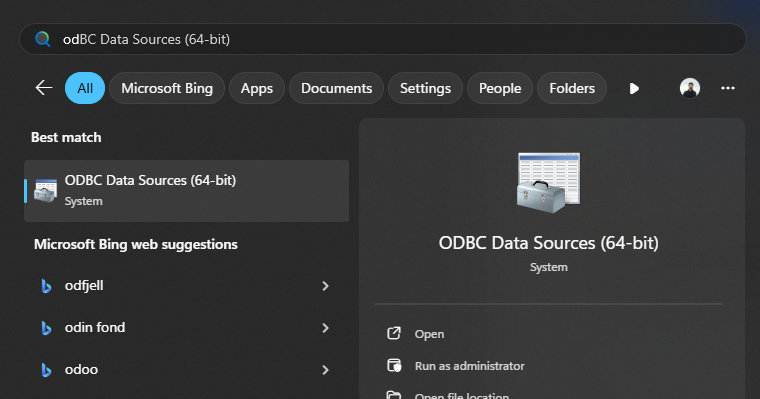
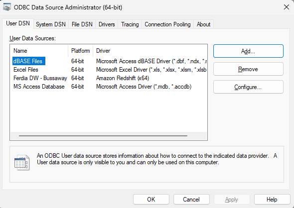
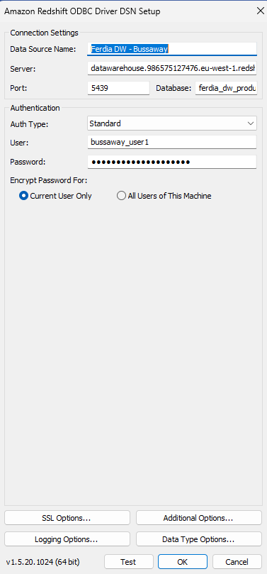
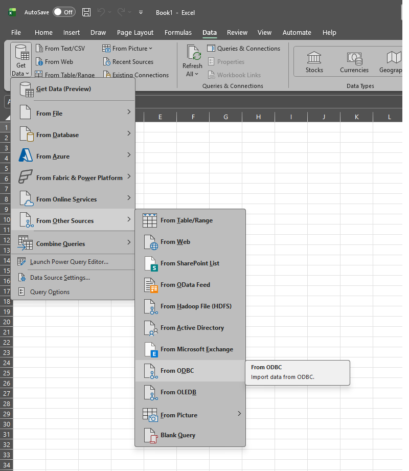
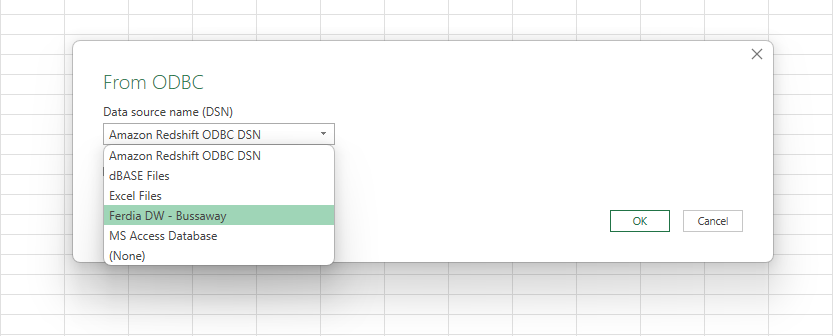
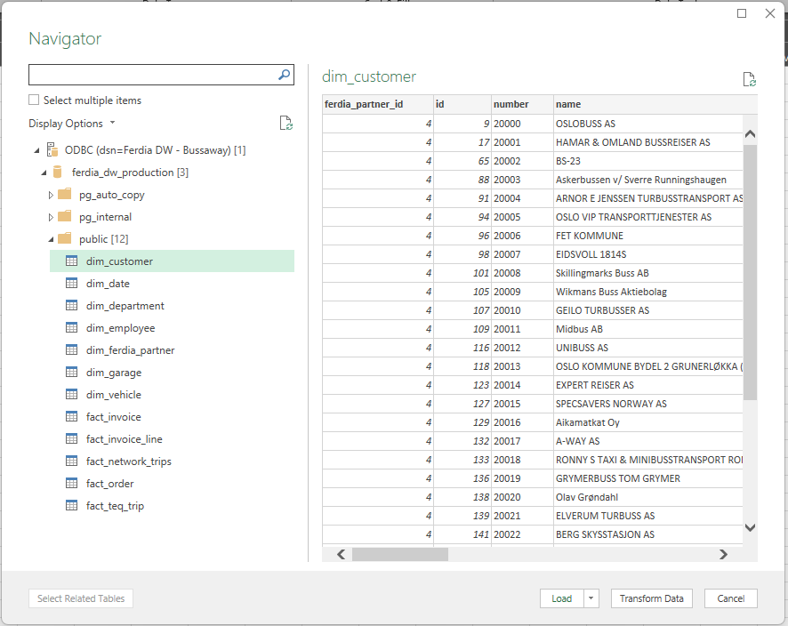
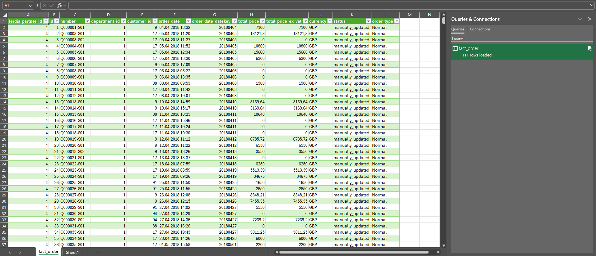

Connection details
- Server/Host: datawarehouse.986575127476.eu-west-1.redshift-serverless.amazonaws.com
- Port: 5439
- Database: ferdia_dw_production
- Username: Your username provided by Ferdia
- Password: Your password provided by Ferdia
Replace placeholders above with your actual environment values.
Power BI Desktop
- Open Power BI Desktop and select Get Data.
- Choose the appropriate connector (e.g., SQL Server or your warehouse connector).
- Enter Server and Database from the details above.
- Select the correct Authentication method (e.g., Organizational/SSO or Database).
- Click Connect and select the schemas/tables you need.
Optional advanced: enable query folding and set privacy levels to optimize performance.
Microsoft Excel
- Install the Amazon Redshift ODBC driver appropriate for your system. After installation, restart Excel.
-
Open ODBC Data Sources from the start-button.  -
Click Add to create a new data source.  -
Select the Amazon Redshift ODBC Driver from the list and proceed. 
-
Enter the Ferdia Data Warehouse details, and your username/password).  -
Open Excel and navigate to Data → Get Data → From Other Sources → From ODBC to start a new connection.  -
Select your configured Ferdia Daatawarehouse ODBC connection.  -
You can now browse all the available data-tables, found under "ferdia_dw_production/public", select the tables you need.  -
You can now load the data to a Sheet or PivotTable. 
SQL clients (Azure Data Studio / SSMS / DBeaver)
- Create a new connection.
- Set Host, Port, and Database from the details above.
- Select the correct Driver (e.g., SQL Server, PostgreSQL, etc.).
- Choose Authentication and connect.
Example query:
SELECT TOP 100 *
FROM dbo.SampleTable
ORDER BY 1;
Troubleshooting
- Validate network access (VPN/allow-list) and correct port.
- Confirm driver versions match warehouse requirements.
- If SSO fails, try interactive login or use database credentials.
- Check that your user has access to the required schemas.